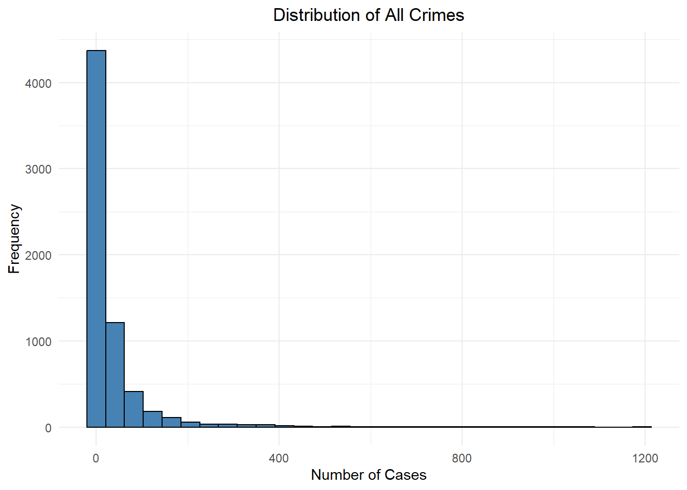
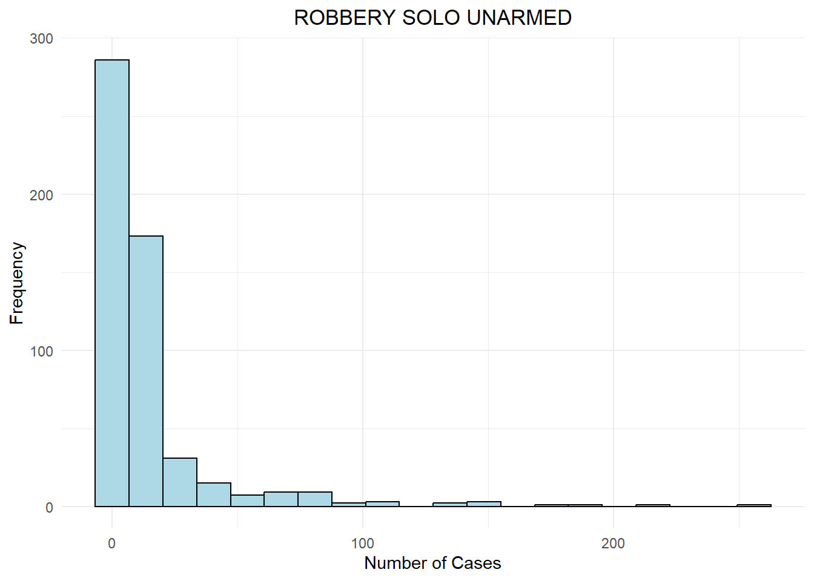

pacman::p_load(sf, st, tidyverse, raster, tmap, tmaptools, ggplot2, spatstat, sfdep)Take-Home_Ex03
Introduction
Importing Packages
Importing Dataset into R environment
crime_district <- read_csv("data/crime_district.csv")Rows: 19152 Columns: 6
── Column specification ────────────────────────────────────────────────────────
Delimiter: ","
chr (4): state, district, category, type
dbl (1): crimes
date (1): date
ℹ Use `spec()` to retrieve the full column specification for this data.
ℹ Specify the column types or set `show_col_types = FALSE` to quiet this message.malaysia_sf <- read_sf(dsn = "data/my_shp",
layer = "mys_admbnda_adm2_unhcr_20210211") %>%
st_as_sf(coords =c(
"longitude", "latitude"),
crs = 4326) %>%
st_transform(crs = 3168)malaysia_sf <- malaysia_sf %>%
filter(ADM1_EN != 'W.P. Labuan' & ADM1_EN != 'Sabah' & ADM1_EN != 'Sarawak') %>%
mutate(ADM1_EN = replace(ADM1_EN, ADM1_EN == 'W.P. Kuala Lumpur', 'Kuala Lumpur'),
ADM1_EN = replace(ADM1_EN, ADM1_EN == 'W.P. Putrajaya', 'Selangor'),
ADM1_EN = toupper(ADM1_EN),
ADM2_EN = toupper(ADM2_EN))malaysia_sfSimple feature collection with 87 features and 14 fields
Geometry type: MULTIPOLYGON
Dimension: XY
Bounding box: xmin: 184853.1 ymin: 139843.3 xmax: 728635.8 ymax: 744607.2
Projected CRS: Kertau (RSO) / RSO Malaya (m)
# A tibble: 87 × 15
ADM2_EN ADM2_PCODE ADM2_REF ADM2ALT1EN ADM2ALT2EN ADM1_EN ADM1_PCODE ADM0_EN
* <chr> <chr> <chr> <chr> <chr> <chr> <chr> <chr>
1 BATU PA… MY0101 <NA> <NA> <NA> JOHOR MY01 Malays…
2 JOHOR B… MY0102 <NA> <NA> <NA> JOHOR MY01 Malays…
3 KLUANG MY0103 <NA> <NA> <NA> JOHOR MY01 Malays…
4 KOTA TI… MY0104 <NA> <NA> <NA> JOHOR MY01 Malays…
5 KULAIJA… MY0105 <NA> <NA> <NA> JOHOR MY01 Malays…
6 LEDANG MY0106 <NA> <NA> <NA> JOHOR MY01 Malays…
7 MERSING MY0107 <NA> <NA> <NA> JOHOR MY01 Malays…
8 MUAR MY0108 <NA> <NA> <NA> JOHOR MY01 Malays…
9 PONTIAN MY0109 <NA> <NA> <NA> JOHOR MY01 Malays…
10 SEGAMAT MY0110 <NA> <NA> <NA> JOHOR MY01 Malays…
# ℹ 77 more rows
# ℹ 7 more variables: ADM0_PCODE <chr>, date <date>, validOn <date>,
# validTo <date>, Shape_Leng <dbl>, Shape_Area <dbl>,
# geometry <MULTIPOLYGON [m]>Geospatial Data Wrangling
crime_district <- crime_district %>%
filter(state != 'Malaysia' & state != 'Sabah' & state != 'Sarawak') %>%
mutate(state = replace(state, state == 'W.P. Kuala Lumpur', 'Kuala Lumpur'),
state = toupper(state),
district = toupper(district)) %>%
filter(district != 'ALL') %>%
filter(type != 'all')
crime_district# A tibble: 10,368 × 6
state district category type date crimes
<chr> <chr> <chr> <chr> <date> <dbl>
1 JOHOR BATU PAHAT assault causing_injury 2016-01-01 39
2 JOHOR BATU PAHAT assault causing_injury 2017-01-01 41
3 JOHOR BATU PAHAT assault causing_injury 2018-01-01 28
4 JOHOR BATU PAHAT assault causing_injury 2019-01-01 41
5 JOHOR BATU PAHAT assault causing_injury 2020-01-01 43
6 JOHOR BATU PAHAT assault causing_injury 2021-01-01 22
7 JOHOR BATU PAHAT assault causing_injury 2022-01-01 19
8 JOHOR BATU PAHAT assault causing_injury 2023-01-01 22
9 JOHOR BATU PAHAT assault murder 2016-01-01 6
10 JOHOR BATU PAHAT assault murder 2017-01-01 0
# ℹ 10,358 more rowscrime_district_malaysia <- malaysia_sf %>%
left_join(crime_district,
by = c("ADM1_EN" = "state",
"ADM2_EN" = "district")) %>%
dplyr::select(1, 6, 13:19)
crime_district_malaysiaSimple feature collection with 6546 features and 8 fields
Geometry type: MULTIPOLYGON
Dimension: XY
Bounding box: xmin: 184853.1 ymin: 139843.3 xmax: 728635.8 ymax: 744607.2
Projected CRS: Kertau (RSO) / RSO Malaya (m)
# A tibble: 6,546 × 9
ADM2_EN ADM1_EN Shape_Leng Shape_Area geometry category
<chr> <chr> <dbl> <dbl> <MULTIPOLYGON [m]> <chr>
1 BATU PAHAT JOHOR 1.86 0.161 (((556714.6 192051.6, 5566… assault
2 BATU PAHAT JOHOR 1.86 0.161 (((556714.6 192051.6, 5566… assault
3 BATU PAHAT JOHOR 1.86 0.161 (((556714.6 192051.6, 5566… assault
4 BATU PAHAT JOHOR 1.86 0.161 (((556714.6 192051.6, 5566… assault
5 BATU PAHAT JOHOR 1.86 0.161 (((556714.6 192051.6, 5566… assault
6 BATU PAHAT JOHOR 1.86 0.161 (((556714.6 192051.6, 5566… assault
7 BATU PAHAT JOHOR 1.86 0.161 (((556714.6 192051.6, 5566… assault
8 BATU PAHAT JOHOR 1.86 0.161 (((556714.6 192051.6, 5566… assault
9 BATU PAHAT JOHOR 1.86 0.161 (((556714.6 192051.6, 5566… assault
10 BATU PAHAT JOHOR 1.86 0.161 (((556714.6 192051.6, 5566… assault
# ℹ 6,536 more rows
# ℹ 3 more variables: type <chr>, date.y <date>, crimes <dbl>crime_district_malaysia_sf <- st_as_sf(crime_district_malaysia)
st_crs(crime_district_malaysia_sf) <- st_crs(malaysia_sf)EDA
Choropleth
Choropleth Map for Crime Rate by State
tmap_mode("plot")tmap mode set to plottingtm_shape(crime_district_malaysia_sf) +
tm_fill("crimes",
style = "quantile",
palette = "Blues",
title = "Crime Ratio") +
tm_layout(main.title = "Distribution of Crime Ratio by planning subzone",
main.title.position = "center",
main.title.size = 1.2,
legend.height = 0.45,
legend.width = 0.35,
frame = TRUE) +
tm_borders(alpha = 0.5) +
tm_grid(alpha =0.2)Choropleth Map for Crime Rate by Category
table(crime_district_malaysia_sf$category)
assault property
3808 2720 assault_data <- subset(crime_district_malaysia_sf, category == "assault")
tm_shape(assault_data) +
tm_fill("crimes",
style = "quantile",
palette = "Blues",
title = "Crime Ratio") +
tm_layout(main.title = "Distribution of Assault Crime Ratio by planning subzone",
main.title.position = "center",
main.title.size = 1.2,
legend.height = 0.45,
legend.width = 0.35,
frame = TRUE) +
tm_borders(alpha = 0.5) +
tm_grid(alpha =0.2)property_data <- subset(crime_district_malaysia_sf, category == "property")
tm_shape(property_data) +
tm_fill("crimes",
style = "quantile",
palette = "Blues",
title = "Crime Ratio") +
tm_layout(main.title = "Distribution of Property Crime Ratio by planning subzone",
main.title.position = "center",
main.title.size = 1.2,
legend.height = 0.45,
legend.width = 0.35,
frame = TRUE) +
tm_borders(alpha = 0.5) +
tm_grid(alpha =0.2)Choropleth Map for Crime Rate by Type
table(crime_district_malaysia_sf$type)
break_in causing_injury murder
544 544 544
rape robbery_gang_armed robbery_gang_unarmed
544 544 544
robbery_solo_armed robbery_solo_unarmed theft_other
544 544 544
theft_vehicle_lorry theft_vehicle_motorcar theft_vehicle_motorcycle
544 544 544 create_crime_map <- function(data, crime_type) {
crime_specific <- subset(data, type == crime_type)
title <- paste("Distribution of",
gsub("_", " ", crime_type),
"in Malaysia")
tm_shape(crime_specific) +
tm_fill("crimes",
palette = "Blues",
style = "quantile",
n = 5,
title = "Number of Cases") +
tm_borders(lwd = 0.1, alpha = 1) +
tm_layout(
main.title = title,
main.title.position = "center",
main.title.size = 1.2,
legend.height = 0.45,
legend.width = 0.35,
frame = TRUE) +
tm_grid(alpha =0.2)
}
plot_list <- list()
crime_types <- c("break_in", "causing_injury", "murder", "rape",
"robbery_gang_armed", "robbery_gang_unarmed",
"robbery_solo_armed", "robbery_solo_unarmed",
"theft_other", "theft_vehicle_lorry",
"theft_vehicle_motorcar", "theft_vehicle_motorcycle")
for (type in crime_types) {
# Filter data for specific crime type
p <- create_crime_map(crime_district_malaysia_sf, type)
plot_list[[type]] <- p
}
tmap_arrange(plotlist = plot_list, ncol = 3, nrow = 4)
Histogram
Preparing Data for Histograms
crime_data_clean <- na.omit(crime_district_malaysia_sf)Histogram for Crime Rate by Category
ggplot(crime_data_clean, aes(x = crimes, fill = category)) +
geom_histogram(color = "black",
bins = 30,
position = "identity",
alpha = 0.7) +
labs(title = "Distribution of Crimes by Category",
x = "Number of Cases",
y = "Frequency",
fill = "Category") +
theme_minimal() +
theme(plot.title = element_text(hjust = 0.5),
legend.position = "bottom") +
scale_fill_manual(values = c("assault" = "#FF9999", "property" = "#66B2FF"))
ggplot(crime_data_clean, aes(x = crimes, fill = category)) +
geom_density(alpha = 0.7) +
labs(title = "Density Distribution of Crimes by Category",
x = "Number of Cases",
y = "Density",
fill = "Category") +
theme_minimal() +
theme(plot.title = element_text(hjust = 0.5),
legend.position = "bottom") +
scale_fill_manual(values = c("assault" = "#FF9999", "property" = "#66B2FF"))ggplot(crime_data_clean, aes(x = category, y = crimes, fill = category)) +
geom_boxplot() +
labs(title = "Distribution of Crime Cases by Category",
x = "Category",
y = "Number of Cases") +
theme_minimal() +
theme(plot.title = element_text(hjust = 0.5),
legend.position = "none") +
scale_fill_manual(values = c("assault" = "#FF9999", "property" = "#66B2FF"))Histogram for Crime Rate by Type
ggplot(crime_data_clean, aes(x = crimes)) +
geom_histogram(fill = "steelblue", color = "black", bins = 30) +
labs(title = "Distribution of All Crimes",
x = "Number of Cases",
y = "Frequency") +
theme_minimal() +
theme(plot.title = element_text(hjust = 0.5))
ggplot(crime_data_clean, aes(x = crimes, fill = type)) +
geom_histogram(color = "black", bins = 30, position = "identity", alpha = 0.5) +
labs(title = "Distribution of Cases by Crime Type",
x = "Number of Cases",
y = "Frequency") +
theme_minimal() +
theme(plot.title = element_text(hjust = 0.5),
legend.position = "bottom",
legend.title = element_blank()) +
scale_fill_brewer(palette = "Set3")for(crime in unique(crime_data_clean$type)) {
crime_data <- subset(crime_district_malaysia_sf, type == crime)
print(
ggplot(crime_data, aes(x = crimes)) +
geom_histogram(fill = "lightblue", color = "black", bins = 20) +
labs(title = gsub("_", " ", toupper(crime)),
x = "Number of Cases",
y = "Frequency") +
theme_minimal() +
theme(plot.title = element_text(hjust = 0.5))
)
}
Summary
category_summary <- crime_data_clean %>%
group_by(category) %>%
summarise(
Count = n(),
Mean_Cases = mean(crimes),
Median_Cases = median(crimes),
SD_Cases = sd(crimes),
Min_Cases = min(crimes),
Max_Cases = max(crimes),
Total_Cases = sum(crimes)
) %>%
mutate(
Percentage_of_Total = (Total_Cases / sum(Total_Cases)) * 100
)
print("Summary Statistics by Category:")[1] "Summary Statistics by Category:"print(category_summary)Simple feature collection with 2 features and 9 fields
Geometry type: MULTIPOLYGON
Dimension: XY
Bounding box: xmin: 184853.1 ymin: 139843.3 xmax: 728635.8 ymax: 723622.2
Projected CRS: Kertau (RSO) / RSO Malaya (m)
# A tibble: 2 × 10
category Count Mean_Cases Median_Cases SD_Cases Min_Cases Max_Cases
* <chr> <int> <dbl> <dbl> <dbl> <dbl> <dbl>
1 assault 3808 11.4 3 26.8 0 528
2 property 2720 65.8 31 109. 0 1192
# ℹ 3 more variables: Total_Cases <dbl>, geometry <MULTIPOLYGON [m]>,
# Percentage_of_Total <dbl>detailed_summary <- crime_data_clean %>%
group_by(category, type) %>%
summarise(
Count = n(),
Mean_Cases = mean(crimes),
Median_Cases = median(crimes),
Total_Cases = sum(crimes)
) %>%
arrange(category, desc(Total_Cases))`summarise()` has grouped output by 'category'. You can override using the
`.groups` argument.print("\nDetailed Summary by Category and Type:")[1] "\nDetailed Summary by Category and Type:"print(detailed_summary)Simple feature collection with 12 features and 6 fields
Geometry type: MULTIPOLYGON
Dimension: XY
Bounding box: xmin: 184853.1 ymin: 139843.3 xmax: 728635.8 ymax: 723622.2
Projected CRS: Kertau (RSO) / RSO Malaya (m)
# A tibble: 12 × 7
# Groups: category [2]
category type Count Mean_Cases Median_Cases Total_Cases
<chr> <chr> <int> <dbl> <dbl> <dbl>
1 assault causing_injury 544 27.8 19 15117
2 assault robbery_gang_unarmed 544 23.6 8 12864
3 assault robbery_solo_unarmed 544 14.6 6 7926
4 assault rape 544 12.0 10 6529
5 assault murder 544 1.62 1 883
6 assault robbery_gang_armed 544 0.125 0 68
7 assault robbery_solo_armed 544 0.0423 0 23
8 property theft_vehicle_motorcycle 544 122. 64 66521
9 property theft_other 544 93.7 59.5 50981
10 property break_in 544 82.3 48 44761
11 property theft_vehicle_motorcar 544 24.6 9 13397
12 property theft_vehicle_lorry 544 5.86 2 3190
# ℹ 1 more variable: geometry <MULTIPOLYGON [m]>type_distribution <- crime_data_clean %>%
group_by(category, type) %>%
summarise(count = n()) %>%
mutate(percentage = count / sum(count) * 100)`summarise()` has grouped output by 'category'. You can override using the
`.groups` argument.print("\nPercentage Distribution of Types within Categories:")[1] "\nPercentage Distribution of Types within Categories:"print(type_distribution)Simple feature collection with 12 features and 4 fields
Geometry type: MULTIPOLYGON
Dimension: XY
Bounding box: xmin: 184853.1 ymin: 139843.3 xmax: 728635.8 ymax: 723622.2
Projected CRS: Kertau (RSO) / RSO Malaya (m)
# A tibble: 12 × 5
# Groups: category [2]
category type count geometry percentage
* <chr> <chr> <int> <MULTIPOLYGON [m]> <dbl>
1 assault causing_injury 544 (((196019.2 689862.6, 196… 14.3
2 assault murder 544 (((196019.2 689862.6, 196… 14.3
3 assault rape 544 (((196019.2 689862.6, 196… 14.3
4 assault robbery_gang_armed 544 (((196019.2 689862.6, 196… 14.3
5 assault robbery_gang_unarmed 544 (((196019.2 689862.6, 196… 14.3
6 assault robbery_solo_armed 544 (((196019.2 689862.6, 196… 14.3
7 assault robbery_solo_unarmed 544 (((196019.2 689862.6, 196… 14.3
8 property break_in 544 (((196019.2 689862.6, 196… 20
9 property theft_other 544 (((196019.2 689862.6, 196… 20
10 property theft_vehicle_lorry 544 (((196019.2 689862.6, 196… 20
11 property theft_vehicle_motorcar 544 (((196019.2 689862.6, 196… 20
12 property theft_vehicle_motorcycle 544 (((196019.2 689862.6, 196… 20